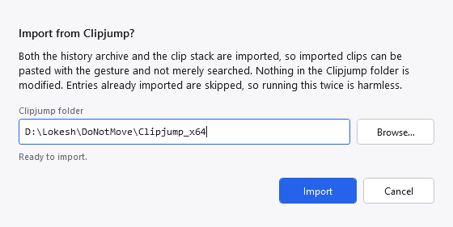

PasteJump can bring an existing Clipjump 12.x installation across: both its history archive and its clip stack.
On first run PasteJump looks for a Clipjump installation and offers to import. You can also start it later from Settings, History, Import Clipjump History, and browse to the folder if the guess is wrong.

The import dialog. It validates the folder before enabling Import — shown here with a path that does not exist, which is the state that explains itself rather than failing later.
| History | Every entry, with its original timestamp, and images with their picture. Imported rows are tagged
clipjump-12.5 so they can be told apart from your own later. |
| Clips | The clip files, newest first and capped at your Clips Kept in the Stack setting, so imported clips can actually be pasted with the gesture rather than only searched. |
Nothing in the Clipjump folder is modified. The database is read through a temporary copy, and the clip files are only read. A failed or cancelled import leaves your Clipjump installation exactly as it was, and whatever had already been imported is kept.
An entry already imported is recognised and left alone, so a second run adds nothing and the summary reports those as already present rather than as failures. That also makes a cancelled import resumable: run it again and it picks up where it stopped.
This was not true before this version. The dialog claimed it while nothing actually checked, so each run inserted a fresh copy of everything — four runs meant four of every entry. If your history looks four times too long, use Remove Duplicates in the history window; it is there for exactly this.
Imported clips keep their text, their images and their file lists. Rich formatting does not survive, and this is a limit of the source rather than a shortcut: Clipjump recorded each clipboard format by a number, and those numbers are only meaningful inside the Windows session that wrote them. Replaying one tomorrow would attach the bytes to an unrelated format, so formats that cannot be identified by name are dropped instead of guessed at.
A clip file holding nothing replayable is counted as skipped, and the summary says how many — "995 of 1004" is a materially different outcome from "all of them".
This is the one thing to watch. Days of History to Keep means "do not keep history older than N days" and runs at every start-up. Importing a Clipjump history means "keep this", and a real one spans years.
Left alone, retention wins silently: the import reports success and thousands of entries are gone by
the next launch. PasteJump therefore checks the age of the oldest entry it imported and offers to switch
retention off. Accept it, or set Days of History to Keep to 0 yourself.
Nothing breaks, but it may be slow. Files in a cloud-backed folder can be placeholders until something opens them, so each image row may have to be downloaded. The import runs behind a progress dialog with a Cancel button for that reason.